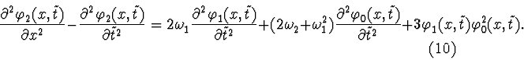
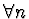
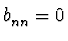
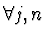
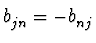
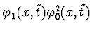
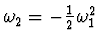
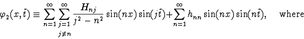
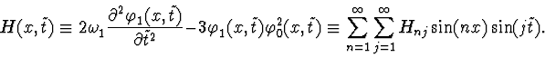
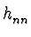

Let us consider the equation to second order in
 :
:

If all diagonal
coefficients of
 are zeros:
are zeros:

:
, then
:
, and the function
has no diagonal harmonics. Hence, selecting
, we obtain a periodic solution to equation (10):


are arbitrary numbers.